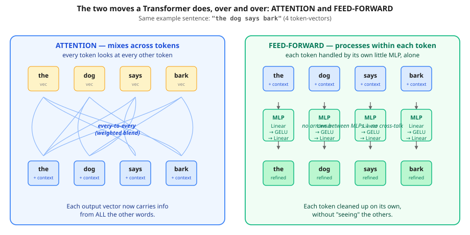

One MLP fits a curve. Stack that block 18 times and you’ve built BERT’s body.
On L1.5 you trained one small Linear → ReLU → Linear network to fit a curve. Here’s the secret: that exact block is the engine inside every Transformer. This lesson takes the little MLP you just built and shows what happens when you stack it — how a pile of identical blocks becomes BERT’s body, and why depth is where the power comes from.
The MLP you trained — Linear → ReLU → Linear — has a fancy name when it shows up inside a Transformer: the feed-forward sub-layer (or "FFN", or "MLP block"). They all mean the same thing.
Two tiny differences between your MLP and BERT's feed-forward:
Linear(1, 8)
ReLU
Linear(8, 1)25 parameters total.
Linear(512, 2048)
GELU
Linear(2048, 512)~2 million parameters per layer. Same shape, bigger.
So when you read "feed-forward layer" in any Transformer paper, picture the small MLP you trained on the parabola. Same architecture, scaled up.
You've trained an MLP with one hidden layer. BERT stacks 18 blocks, where each block is (attention + feed-forward). Common confusion:
Why depth matters intuitively. Each block builds on the previous block's output:
The notebook runs an empirical depth test on a sine wave: depth 1 → loss 0.10, depth 2 → 0.0016, depth 4 → 0.0009. Deeper models build hierarchical features that shallow models can't.
Before L2 and L3 — a subtle point. So far we've sorted models into two camps:
y = Σ wᵢ · feature_i + b.You've met ReLU and GELU. Softmax is the one nonlinearity you haven't built yet, so here's the plain idea: it takes a handful of raw scores and squashes them into fractions that add up to 1 — one tidy probability per option. For example, scores [2, 1, 0] come out as roughly [0.66, 0.24, 0.10] (biggest score → biggest share, and they sum to 1). That's all it is; you'll put it to work inside attention in L3.
Embeddings and attention are NOT model classes. They're building blocks that plug into either kind of model. You can use an embedding inside a linear-regression-style head, or inside a neural-net head. Same for attention.
| Block | Adds nonlinearity? | What it adds |
|---|---|---|
| Embedding | No (pure lookup) | Trainable vector per discrete input |
| Attention | Yes (softmax inside) | Cross-token mixing |
| Feed-forward | Yes (GELU inside) | Per-token nonlinear capacity |
The notebook trains four small models — same data, mix-and-match — to drive this home:
| Demo | Building block | Head | Worked? |
|---|---|---|---|
| A | Embedding | Linear (regression style) | ✅ |
| B | Embedding | MLP (neural-net style) | ✅ |
| C | Attention | Linear (regression style) | ✅ |
| D | Attention | MLP (neural-net style) | ✅ |
Key insight: embedding and attention are reusable building blocks. The "linear vs neural" decision is a separate axis — it's about whether the head that consumes their output has a nonlinearity. A real Transformer block uses the MLP option (Demo D), and stacks 18 copies of it.
BERT, GPT, PRAGMA — they are NEURAL NETWORKS. Specifically a kind called Transformers. And a Transformer is built out of three pieces, all of which you now know:
The "trick" of the Transformer is just interleaving attention and feed-forward many times. They do very different things — and that difference is what makes the whole thing work. Let's see it on an actual sentence.

"the dog says bark"). Attention (blue, left) connects every token to every other — the output vectors are blends of the inputs. Feed-forward (green, right) gives each token its own little MLP — the boxes never talk to each other. One mixes across; the other thinks within.Same sentence, "the dog says bark", walked through a real 18-layer encoder:
| After… | What each word's vector now "knows" |
|---|---|
| Embedding | Each word is just its own meaning, isolated. "dog" means "dog"; nothing about being followed by "says". |
| Block 1 attn | "dog" has now blended in a bit of "the" (it knows there's a determiner before it) and "says bark" (it knows there's a verb-object pair after it). One round of cross-mixing. |
| Block 1 FFN | Each blended vector gets refined by its own MLP — gradients squeeze useful patterns into each token (e.g. "I'm a noun in the subject position"). No cross-talk. |
| Block 2 attn | "dog" attends again — but now to the Block-1 outputs of the other tokens, which already carry context. So "dog" is now seeing "the (knows it's a determiner)" and "says (knows it precedes a sound)". Neighbours-of-neighbours. |
| …blocks 3–17… | Each block adds one more "round" of cross-context, refining inside each token. After 5 layers, "dog" has rich grammatical context; after 10, semantic; after 18, deep abstract patterns. |
| Output head | Each token's vector is now a tiny summary of its role in the whole sentence. The head reads the masked position's vector and predicts a word. |
w·x + b; BERT has 18 stacks of attention + feed-forward — one for cross-token mixing, one for per-token thinking, repeating.
dog wake upEvery layer produces, at each token's position, one vector — say 16 numbers (or 1024 in PRAGMA). That vector is a kind of "knowledge bundle": a compressed summary of everything the model has figured out about this token, in this specific sentence, so far. It starts shallow and gets richer with each block. The key intuition:
The widget below walks dog through a real 18-block Transformer. Drag the slider and watch dog's "knowledge bundle" fill up.
Nobody hand-codes "layer 5 = subject role". So how do these features emerge? Gradient descent figures it out. Here's the magic:
What does a single block actually do to a word's vector? Here's "it" — a 2-number vector — going through one (attention + feed-forward) block, the thing that repeats 18 times. Every number is shown:
Use the stacking diagram and the 'watch the sentence through the stack' widget above.
All 18 — the whole (attention + feed-forward) block repeats. Embedding happens once at the bottom, the head once at the top.
Linear → ReLU → Linear. What's the only real difference from BERT's feed-forward?Size (and GELU instead of ReLU): BERT's is Linear(512,2048) → GELU → Linear(2048,512) — same shape, bigger.
The per-word thinking step. Attention mixes info across words; the FFN transforms within each word. Drop it and the model can route but barely process.
Almost nothing — no mixing, no transformation, basically a lookup table. Depth is where the power comes from.
Once, at the very bottom. Then the (attention + FFN) block repeats; the output head runs once at the top.
Layer 17's output. Each layer transforms the previous one's vectors, so later layers build on earlier ones.
Depth lets the model build features in stages (simple → complex). One wide layer can't compose transformations the way a stack can.